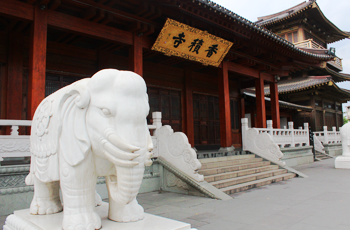
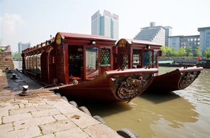
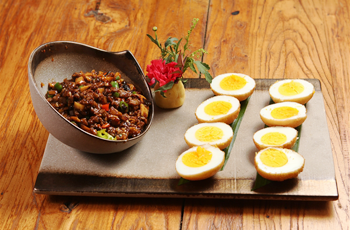
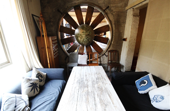
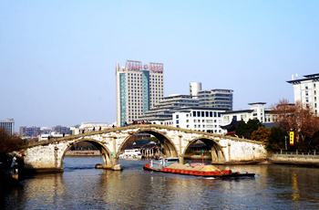
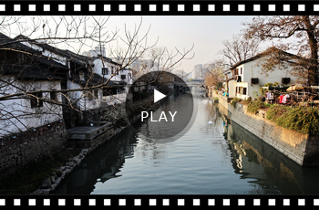
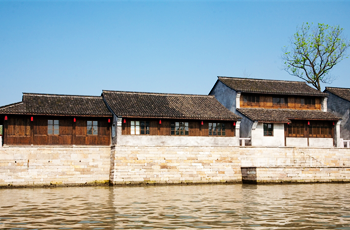
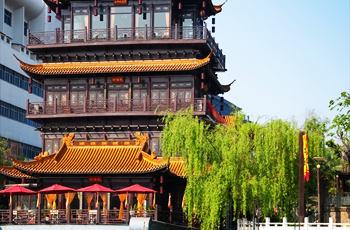
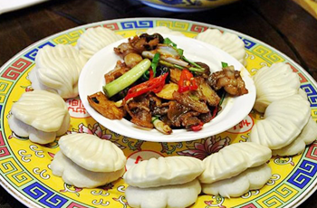

達人旅行，追尋的是跳脫傳統、嘗試新玩法，在杭州以水上巴士遊運河、騎腳踏車遊覽老寺古橋，或著瞄準最新潮的景點如絲聯166創意園區，在老絲綢廠房改造的新區裡賞藝術、享美食，不同角度玩杭州徹底滿足達人新鮮感。
-
香積寺 運河第一香
香積寺建築群中的四座大殿屋頂上也採用銅瓦，屋脊、欄杆等部位也做包銅處理，使整個建築群增加堂皇的意境和濃郁的藝術氣息，也使得香積寺躍升爲獨具一格... [more]
{古蹟還是要朝聖的…}  -
香積寺旅遊碼頭
體驗水上巴士，遊河觀看「運河人家」在地生活！
北新關旅遊碼頭
沿途風光美景，到站下船嘍！
北新關碼頭自行車租賃站
來趟運河單車之旅吧！騎累了，停下腳步嚐嚐雲泰風情美食吧!
 -
雲水謠主題餐廳 頂級商圈
主打雲南特色菜的主題餐廳，來客不妨順著好奇心嘗試點選，嚐嚐＂失戀三十三天＂鹹、香、辣、甜是如何的五味雜陳，看看＂當雞蛋碰上石頭＂怎樣燒出軟碰硬的美味... [more]
{飽餐一頓後，出發吧！}  -
絲聯166創意園區 Loft 166－蜜桃咖啡 杭州版華山文創
絲聯166是遊人與藝術家盡情品味悠閒、尋找靈感的好去處。富有現代感的「蜜桃咖啡」在此，保留舊有的巨型渦輪、鐵柱管線等做為擺設，音樂、咖啡、美食與歷史的融合令人驚艷... [more]
{好有復古ｆｕ的文創園區}  -
拱宸橋 橫跨運河之橋
京杭大運河上的拱宸橋，初次見面有股莫名的感動，眼前是2500年的歷史。古蹟級的「拱宸橋」，其優美的線條與營造的美麗景觀，運河旁商店亦別有風味... [more]
{拍攝美照線條絕美之橋}  -
小河直街 杭州原汁原味
 -
大關橋 沿途
觀賞沿途在地民居群，還有那運河上首尾相連的貨運拖船與遊船擦肩的景象，真實生活彷彿是條「活著的運河」！
{騎行經大關橋...}  -
賣魚橋碼頭自行車租賃站
歸還單車，繼續漫步運河邊，欣賞沿岸風光…
{單車之旅結束嘍!} 
遠遠竟瞧見一座位於河上古色古香的建築物，走近一看，牌坊上寫著候聖駕，進去一探究竟吧！ -
乾隆舫大酒店 皇上駕到
乾隆舫就位於河上，像一座中國宮廷式建築的古色古香遊船。多麼有氣勢的牌樓、宮廷式建築，還有金碧輝煌的餐具，彷彿享受皇帝般待遇，船艙造型建築挺趣味十足... [more]
{最後一站，下次再來！} 